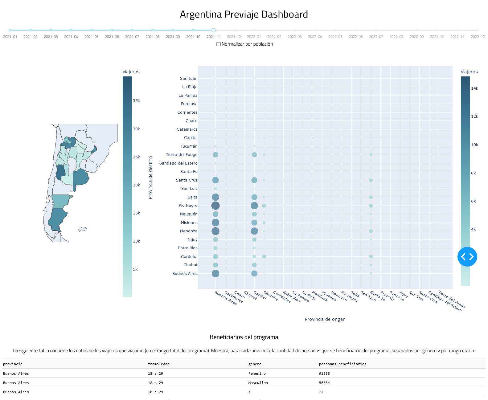

This is going to be a short post. It’s just about something I published on Github, which I made a few months ago. I was getting into learning about making dashboards with Python, so I decided to make one about the Argentina Previaje program. The program was implemented along side travelling opening up again after the first wave of the pandemic, and it was meant to incentivize tourism by giving people a 50% return on their spending on tourism-related services. A pretty neat way of helping both the tourism industry and the tourist.
Anyways, the dashboard is pretty simple. It’s made using Dash, a library for making interactive data visualizations in Python. You don’t have to know much about HTML or CSS to make some pretty nice looking stuff. The dashboard has some graphs that show the amount of travellers between provinces in the selected date. Also, a table that just shows the amount of people who benefitted from the program, divided by province of origin, age and gender.

Check it out at ArgPreviajeDashboard. Something that I’d still like to implement is being able to publish it on this site, but Github pages is essentially for static pages only, which means that it doesn’t support frameworks which use a server to run things, which is how Dash works. I’ve been looking at some possible solutions to it, and found some comments from folks about building a complete static version of the dashboard, but it didn’t seem too trivial. Something I’ll definitely maybe look into eventually.